The goal of this lab is to add the IMU to the robot and start running the Artemis+sensors from a battery, recording a stunt on the RC robot.
Prelab
The pre-lab phase mainly involves reading and understanding the basic principles and output meanings of the ICM-20948 IMU, including accelerometer, gyroscope and magnetometer. I also thoroughly reading the experiment instructions to understand the overall process of subsequent data acquisition, attitude estimation, and transmission.
Lab Tasks
Prep the RC car
Start charging the battery for the RC car using the USB charger.
Setup the IMU
Install the SparkFun ICM-20948 Arduino library from Library Manager.
Connect the IMU to the Artemis board using QWIIC connectors.
Run "Example1_Basics" and verify readings change when rotate/flip the board.
The example file defines #define AD0_VAL 1, indicating that the AD0/SDO pin is high. AD0_VAL is used to select the I2C address bit of the ICM-20948.
From the serial output, it can be observed that when the accelerometer Acc (mg) is stationary, one axis is close to ±1000 mg (≈1g), and the other two axes are close to 0. When the board is flipped or its orientation is changed, the axis close to ±1000 mg will switch between x/y/z, and may change from positive to negative. Rapid movement or a tap will cause a brief deviation due to superimposed linear acceleration.
When the gyroscope Gyr (dps) is stationary, each axis is close to 0 dps. When rotating around a certain axis, the corresponding axis will show a significant positive/negative angular velocity; the faster the rotation, the larger the magnitude, and it returns to near 0 after stopping.
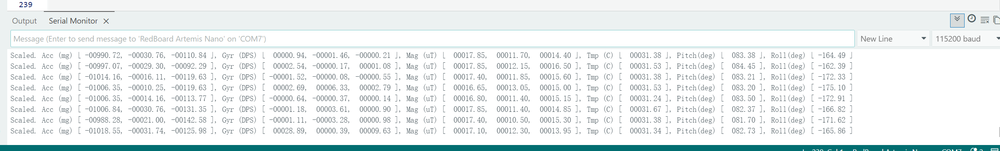
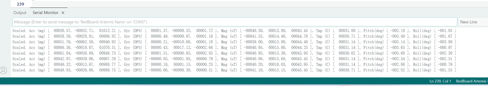
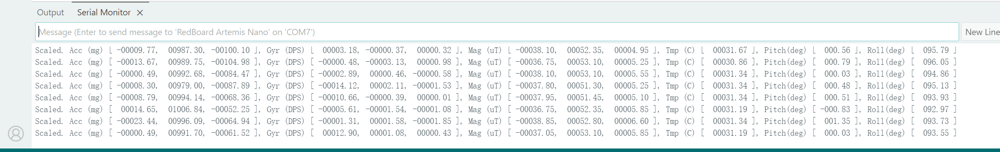
Figure 2 change in sensor values when act on the board
Blink LED when the board is running.
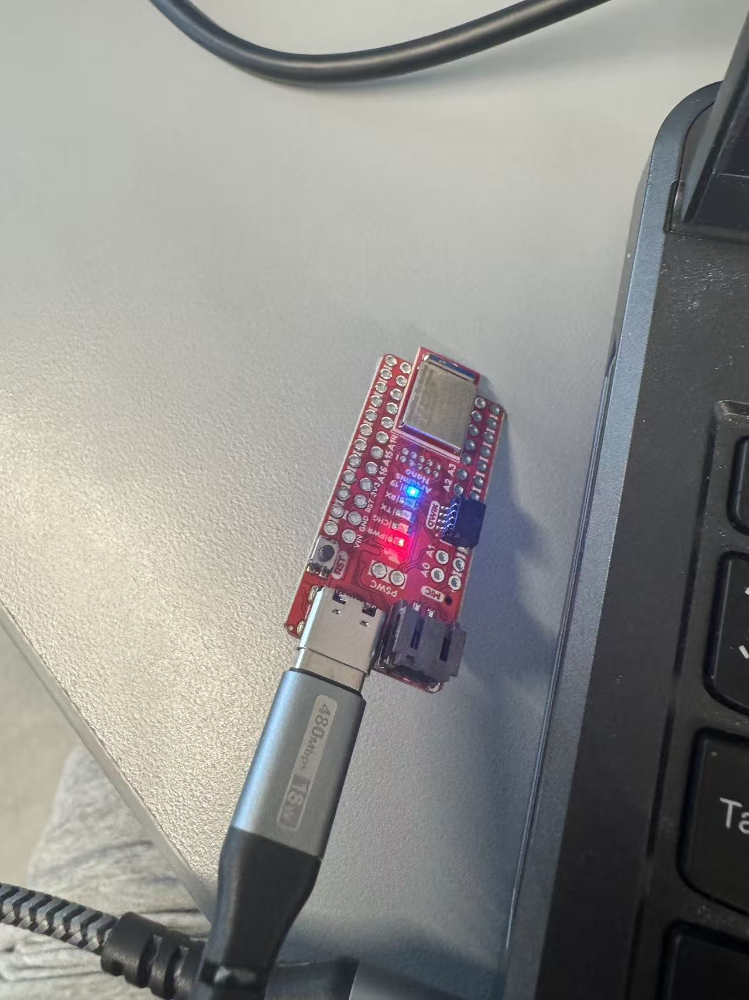
Figure 3 LED blink when board is running
void blink3()
{
for (int i = 0; i < 3; i++)
{
digitalWrite(LED_BUILTIN, HIGH);
delay(500);
digitalWrite(LED_BUILTIN, LOW);
delay(500);
}
}
void setup()
{
pinMode(LED_BUILTIN, OUTPUT);
// Step4: blink 3 times slowly on start-up
blink3();
}
Accelerometer
Use the equations from class to convert accelerometer data into pitch and roll.
Show the output at { -90, 0, 90 } degrees pitch and roll.
Write a Jupyter function to plot data vs time (ms/us) for future labs.
Discuss accelerometer accuracy and (optional) two-point calibration.
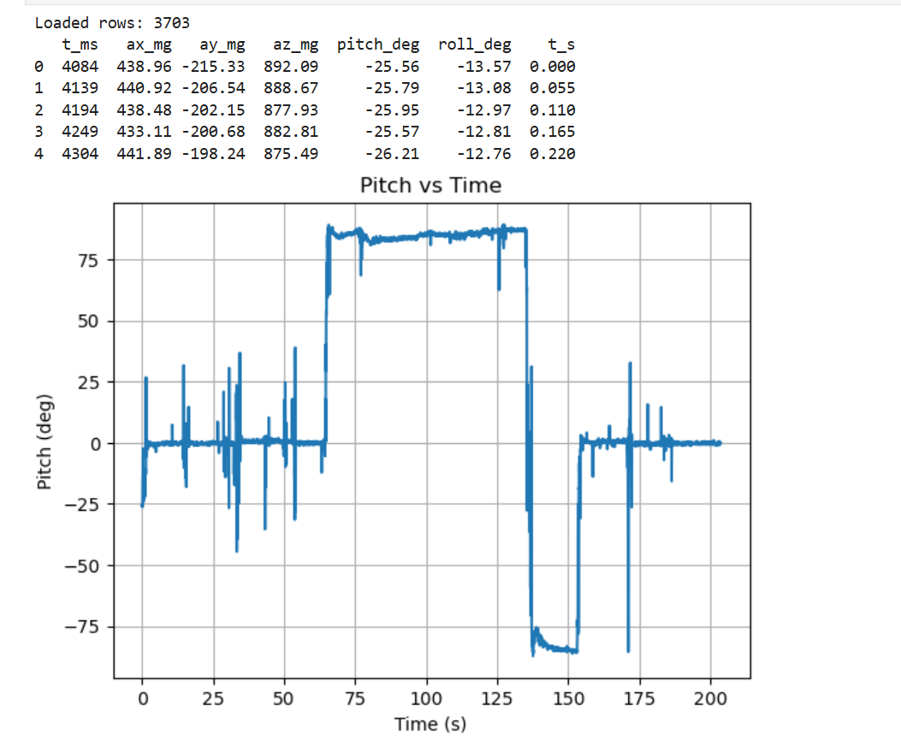
Figure 4 Pitch Angle vs. Time
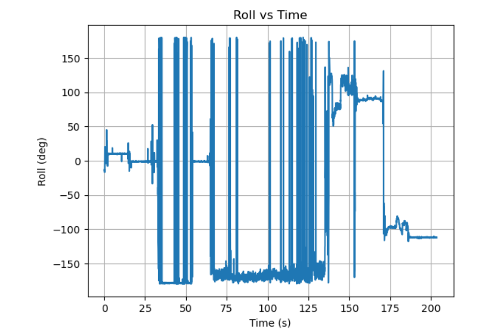
Figure 5 Roll Angle vs. Time
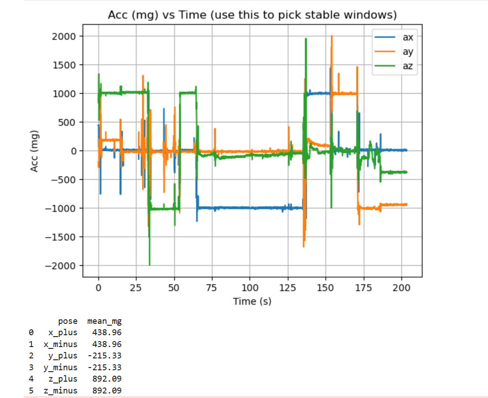
Figure 6 Axis Accelerometer (mg) vs. Time
Using the standard accelerometer-based attitude equations mentioned in the class with radians-to-degrees conversion, pitch and roll were computed from the 3-axis acceleration data in Jupyter. The time traces show clear plateaus near 0° (board flat) and near ±90° (board on an edge), with brief spikes during handling due to transient linear acceleration.
Accelerometer accuracy was evaluated using six static poses (±X, ±Y, ±Z). The mean readings for the gravity-aligned axis were:
X+: +995.35 mg, X−: −1000.20 mg, Y+: +991.32 mg, Y−: −1004.00 mg, Z+: +1000.71 mg, Z−: −1018.04 mg.
These results confirm the sensor is close to the expected ±1 g level, with the largest endpoint deviation observed on Z− (≈ −1018 mg).
A per-axis two-point calibration (linear scale + offset) was then applied using the measured +1 g and −1 g endpoints. The fitted parameters were:
X: k=1.0022, b=−2.42 mg; Y: k=1.0023, b=−6.34 mg; Z: k=0.9907, b=−8.66 mg.
After calibration, the gravity-magnitude mean moved closer to the ideal 1000 mg (from 1013.94 mg to 1011.76 mg), while the overall standard deviation changed only slightly (70.58 mg to 70.22 mg), indicating calibration mainly corrects static bias/scale error and the remaining variation is dominated by motion/transition segments.
When the accelerometer is noisy, especially near the RC car. Record data and analyze the
frequency spectrum.
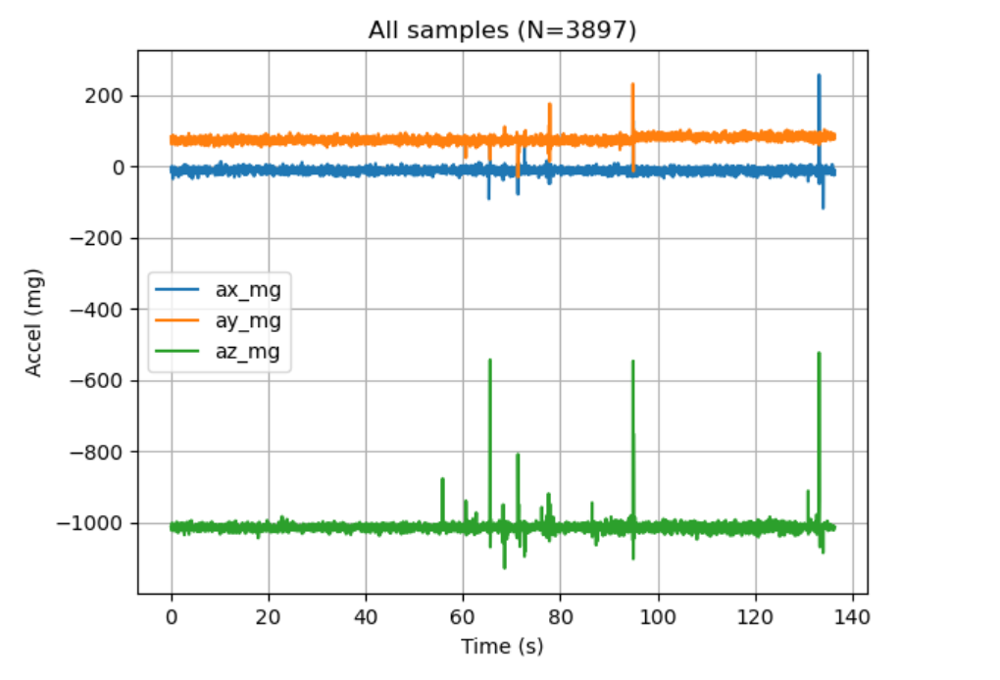
Figure 7 Accelerometer Time-Domain Data
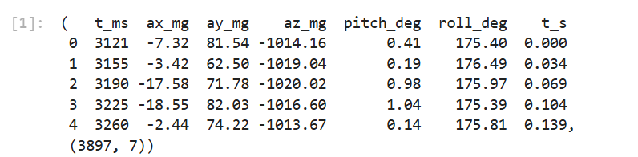
Figure 8 Sample Preview and Logging Summary (N=3897)
# Data cleaning: keep only valid 6-col CSV rows, coerce to numeric, build t_s
import pandas as pd
CSV_PATH = "data2.csv"
cols = ["t_ms","ax_mg","ay_mg","az_mg","pitch_deg","roll_deg"]
rows = []
with open(CSV_PATH, "r", encoding="utf-8", errors="ignore") as f:
for line in f:
s = line.strip()
if not s:
continue
parts = s.split(",")
if len(parts) != 6:
continue
if parts[0].strip() == "t_ms": # skip header
continue
if parts[0].startswith("Initialization"): # skip init line
continue
rows.append(parts)
df = pd.DataFrame(rows, columns=cols).apply(pd.to_numeric, errors="coerce")
df = df.dropna().reset_index(drop=True)
df["t_s"] = (df["t_ms"] - df["t_ms"].iloc[0]) / 1000.0
# Plot: accel axes vs time
import matplotlib.pyplot as plt
x = df["t_s"].to_numpy(float)
ax = df["ax_mg"].to_numpy(float)
ay = df["ay_mg"].to_numpy(float)
az = df["az_mg"].to_numpy(float)
fig, a = plt.subplots()
a.plot(x, ax, label="ax_mg")
a.plot(x, ay, label="ay_mg")
a.plot(x, az, label="az_mg")
a.set_xlabel("Time (s)")
a.set_ylabel("Accel (mg)")
a.set_title(f"All samples (N={len(df)})")
a.grid(True)
a.legend(loc="best")
plt.show()
Include a graph of the Fourier Transform of accelerometer data and discuss a reasonable cutoff frequency for filtering.
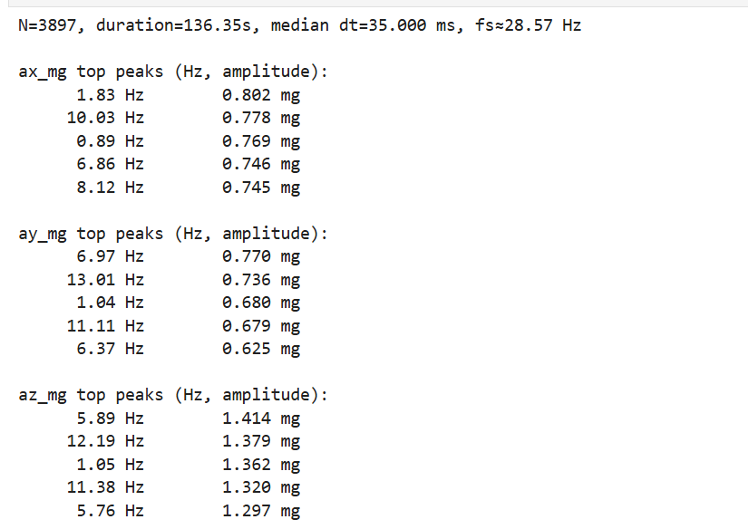
Figure 10 Peak frequencies extracted from FFT (top peaks per axis)
An FFT was computed for each accelerometer axis using a sampling rate estimated from the median time step
(N = 3897, duration = 136.35 s, median dt = 35.000 ms, fs ≈ 28.57 Hz). The dominant peaks were mainly below
~14 Hz: ax peaks at 1.83 Hz (0.802 mg) and 10.03 Hz (0.778 mg); ay peaks at 6.97 Hz (0.770 mg) and 13.01 Hz
(0.736 mg); az peaks at 5.89 Hz (1.414 mg) and 12.19 Hz (1.379 mg).
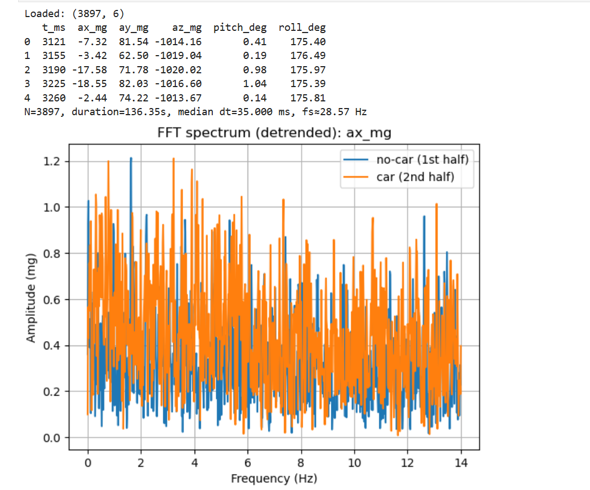
Figure 11 Time-domain accelerometer data (all samples)
The time-domain plot shows mostly steady acceleration with intermittent spikes caused by handling/vibration.
These transients are consistent with the broad-band components seen in the spectrum and motivate filtering
to stabilize downstream angle estimation.
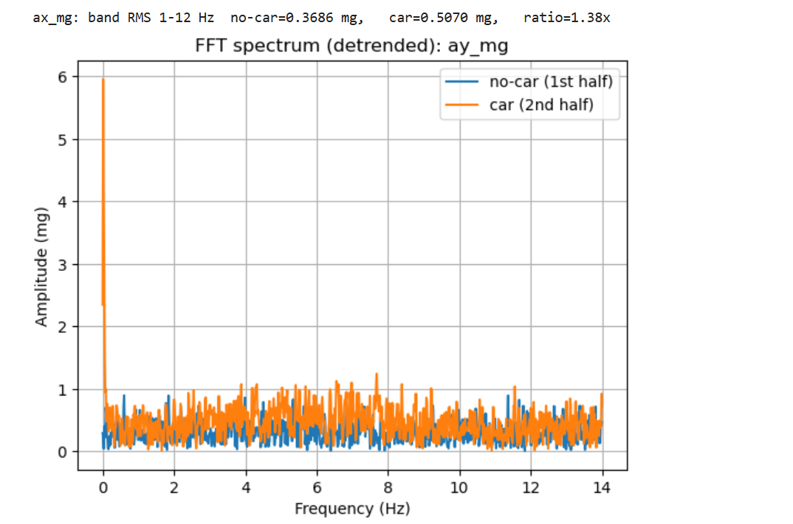
Figure 12 FFT comparison for ax (no-car vs. car)
To evaluate the effect of the RC car, the recording was split into two halves: no-car (1st half) and car nearby
(2nd half). In the 1–12 Hz band, ax RMS increased from 0.3686 mg (no-car) to 0.5070 mg (car), i.e., a 1.38× increase.
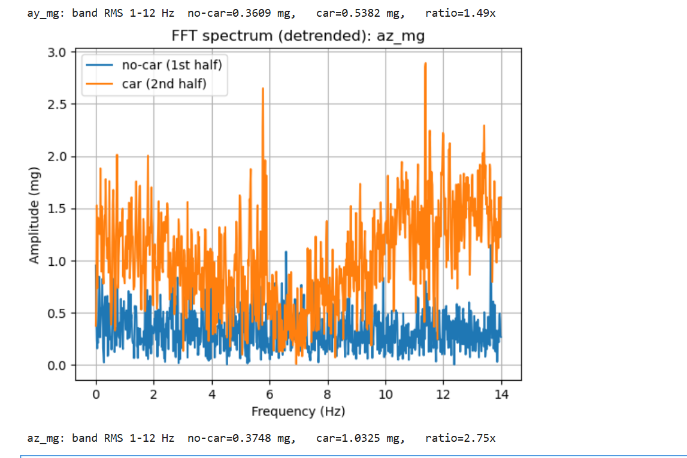
Figure 13 FFT comparison for ay (no-car vs. car)
The same split-half analysis on ay shows an RMS increase (1–12 Hz) from 0.3609 mg (no-car) to 0.5382 mg (car),
corresponding to a 1.49× rise in low-frequency vibration energy.
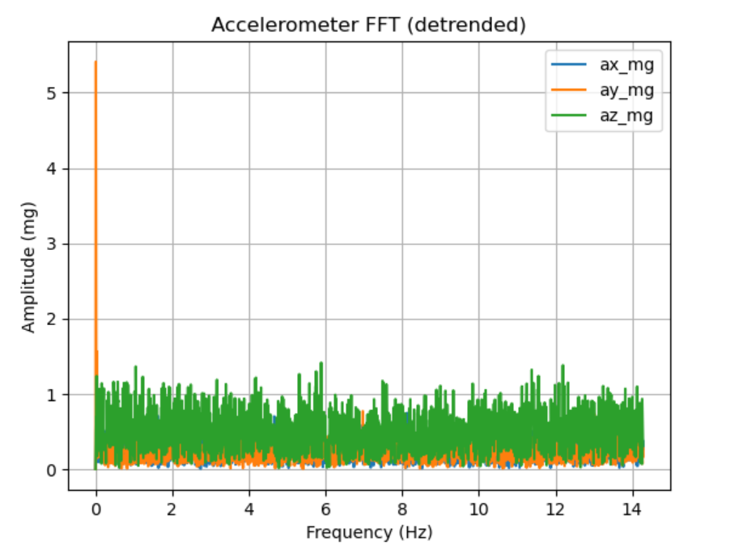
Figure 14 FFT comparison for az (no-car vs. car)
The az axis is the most affected by the RC car: band-limited RMS (1–12 Hz) increases from 0.3748 mg (no-car) to
1.0325 mg (car), a 2.75× increase, indicating strong coupling of vibration into the z-axis.
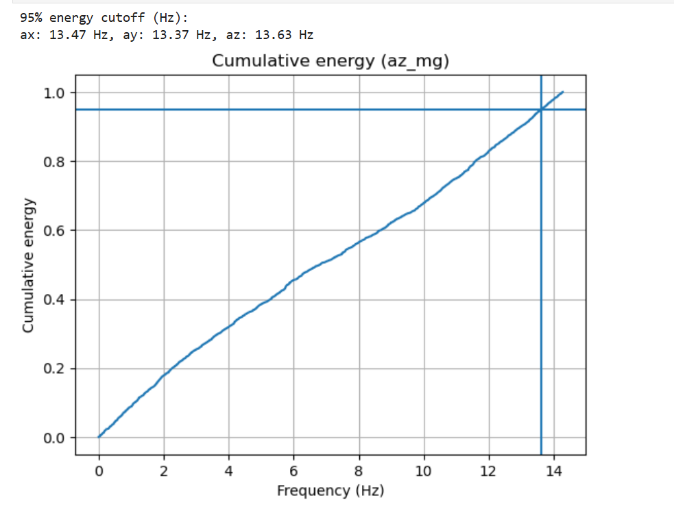
Figure 15 Cumulative spectral energy and cutoff selection
A cutoff frequency was selected using cumulative spectral energy: the 95% energy points are
13.47 Hz (ax), 13.37 Hz (ay), and 13.63 Hz (az). Therefore, a low-pass cutoff of 13 Hz was chosen to retain
nearly all motion-related content while attenuating higher-frequency noise. Lower cutoffs would further smooth
the signal but risk attenuating legitimate dynamics, whereas higher cutoffs would pass more vibration noise,
reducing angle stability.
Implement a simple low-pass filter on accelerometer data and plot original vs filtered signals.
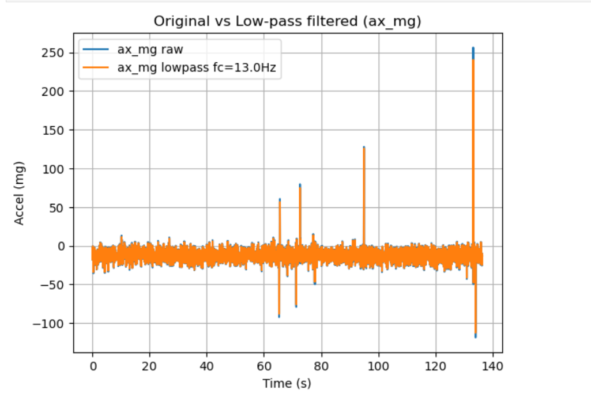
Figure 16 Original vs Low-pass Filtered Accelerometer (ax_mg)
Figure 17 Original vs Low-pass Filtered Accelerometer (ay_mg)
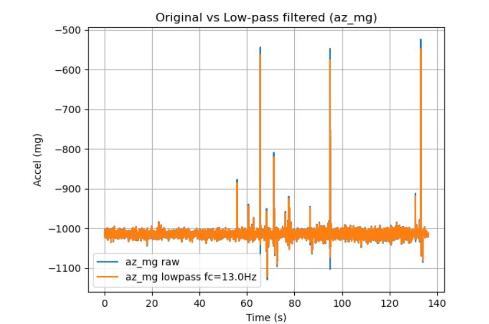
Figure 18 Original vs Low-pass Filtered Accelerometer (az_mg)
Across all three axes, the low-pass filter reduces high-frequency fluctuations while preserving the slower
baseline/step changes of the signal. The filtered traces are visibly smoother than the raw data, and large transient
spikes are attenuated but not fully removed (as expected for impulsive events). Overall, the result confirms that the
chosen cutoff primarily suppresses vibration/noise components while maintaining the underlying motion trend.
Gyroscope angular rates were integrated over time using the class equations to obtain
pitch, roll, and yaw. During data collection, the IMU was
rotated slowly through different angles (to create smooth attitude changes) and lightly tapped/knocked
(to introduce brief vibration/impulse disturbances).
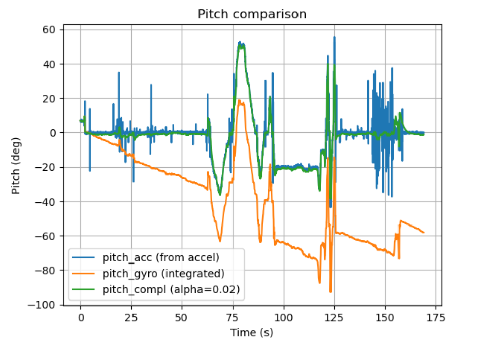
Figure 19 Pitch comparison (accelerometer vs integrated gyro vs complementary filter)
In Figure 19, the accelerometer-based pitch is stable in quasi-static segments but exhibits spikes
during taps/motion. The gyro-integrated pitch responds smoothly to rotation but shows noticeable drift
over time. The complementary filter (alpha = 0.02) tracks the accelerometer baseline while suppressing
high-frequency accelerometer noise and limiting gyro drift, producing the most stable estimate.
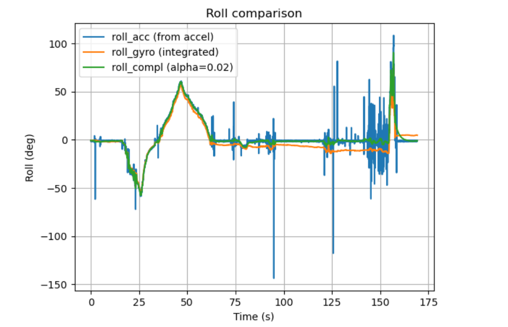
Figure 20 Roll comparison (accelerometer vs integrated gyro vs complementary filter)
Figure 20 shows the same trend for roll: accelerometer roll contains occasional impulsive outliers, gyro roll
is smoother but slowly diverges, and the complementary filter yields a smoother trajectory that remains
close to the gravity-referenced roll during slow tilts while rejecting tap-induced noise.
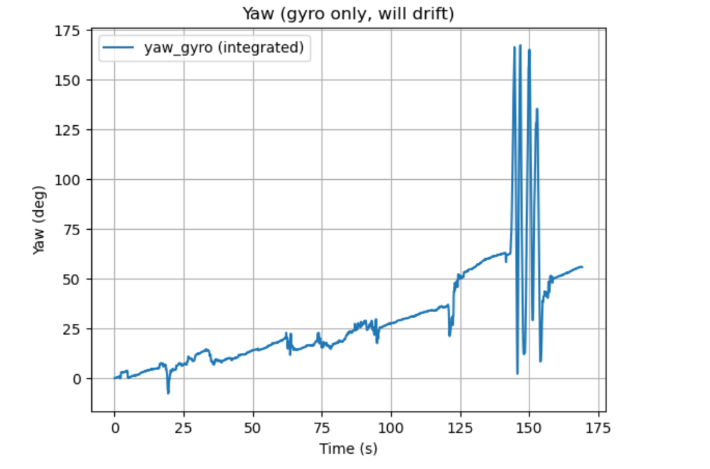
Figure 21 Yaw from gyro integration (demonstrating drift)
As shown in Figure 21, yaw was computed by integrating the gyro z-rate; unlike pitch/roll, yaw does not have a
gravity-based accelerometer reference, so the integrated yaw accumulates bias and drifts over time, especially
after disturbances and sustained rotation.
A complementary filter was applied to pitch and roll to combine low-frequency,
drift-free information from the accelerometer with high-frequency responsiveness from the gyroscope. With
alpha = 0.02, the output stays stable during static periods, responds well to slow angle changes,
and is noticeably less sensitive to quick vibrations/taps than raw accelerometer angles while avoiding the long-term
drift of pure gyro integration.
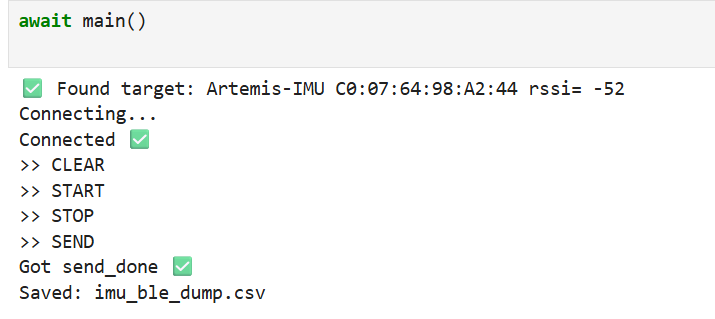
Figure 24 BLE capture workflow (CLEAR/START/STOP/SEND) and saved CSV output
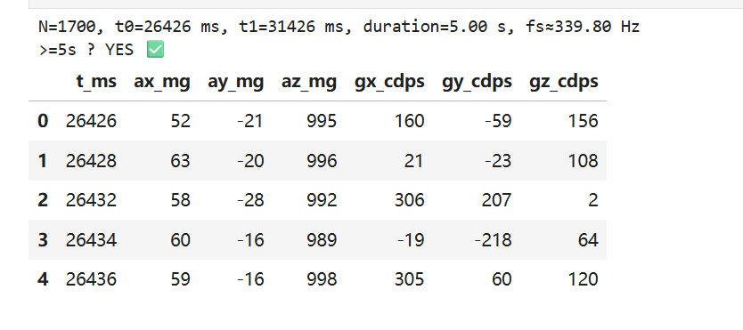
Figure 25 Captured IMU samples and sampling statistics (N=1700, duration=5.00 s, fs≈339.8 Hz)
Speed up execution of the main loop
Implemented a non-blocking loop that checks dataReady() each iteration and only logs when new IMU data is available (no waiting).
Removed debugging delays during recording and minimized serial printing to avoid slowing the loop.
Sampling speed achieved (Figure 25): N=1700 samples in 5.00 s → fs≈339.8 Hz (median-based estimate).
The loop can iterate faster than the IMU update rate; extra iterations simply do not append samples unless the IMU indicates new data.
Collect and store time-stamped IMU data using start/stop flags
Data logging was controlled via BLE commands: CLEAR resets buffers, START begins recording,
STOP ends recording, and SEND transmits the buffered samples to the computer and saves them as CSV
(Figure 24).
Data storage design (arrays, data types, memory)
Stored each sample with a timestamp and both sensor axes (e.g., t_ms, ax_mg, ay_mg, az_mg, gx, gy, gz), keeping accel and gyro aligned by time.
Preferred numeric storage on-board (integers/fixed-point) for memory efficiency; timestamps as uint32_t.
Memory estimate: using uint32_t time (4B) + 6×int16_t axes (12B) ≈ 16 B/sample.
For 5 s at ~340 Hz: 1700 samples → ~27 KB, which is practical for the Artemis.
Demonstrate ≥ 5 s capture and BLE transfer
The recorded run satisfies the requirement: duration=5.00 s and the check reports “≥5s: YES” (Figure 25).
The dataset was successfully sent over BLE and saved as imu_ble_dump.csv> (Figure 24).
Mounted the RC car battery with correct polarity (red-to-red, black-to-black) and installed AA batteries in the remote controller.
Recorded a driving video and establish a baseline of the car dynamics (forward/backward speed, turning radius, acceleration/braking response).
Video 1 RC Car Baseline Driving (Manual Control)
Appendix
1. An announcement of AI usage
I used AI tools to support parts of this lab, mainly for webpage/HTML formatting, minor code edits and debugging,
and polishing the written explanations for clarity and conciseness. Throughout the assignment, I verified the
suggestions against the lab requirements, tested changes on my own setup, and made final design and implementation
decisions independently based on my own understanding.